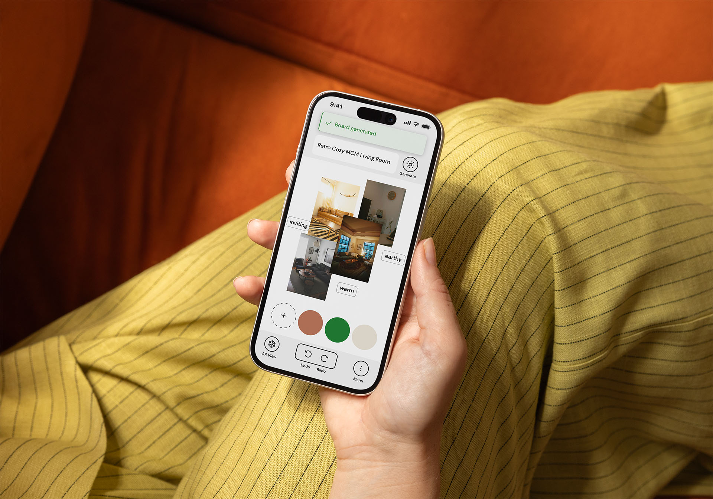
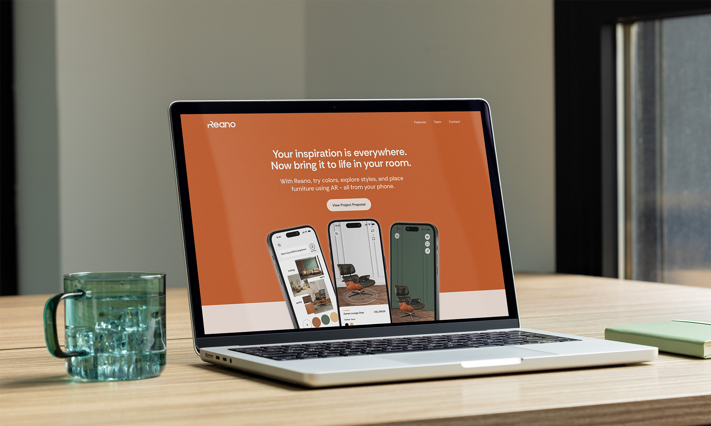
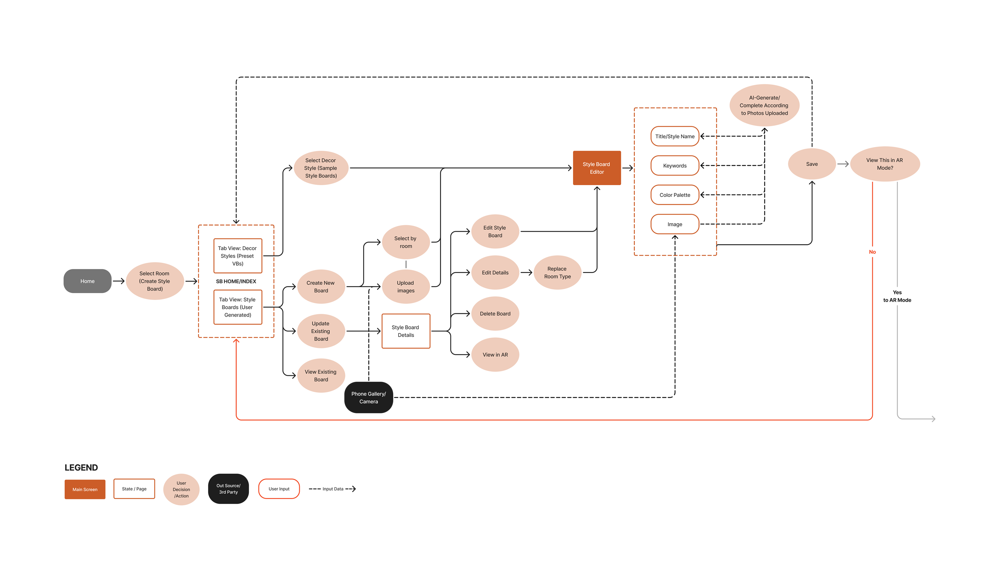
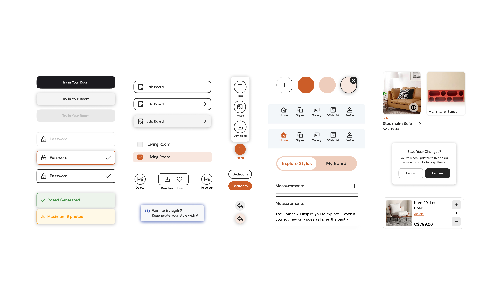
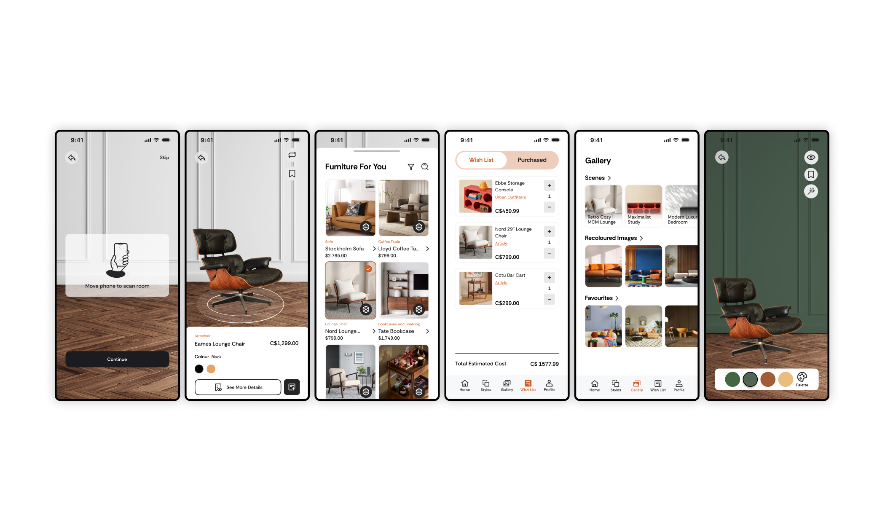
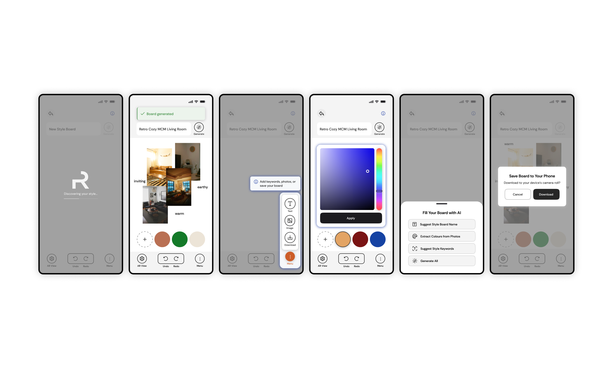
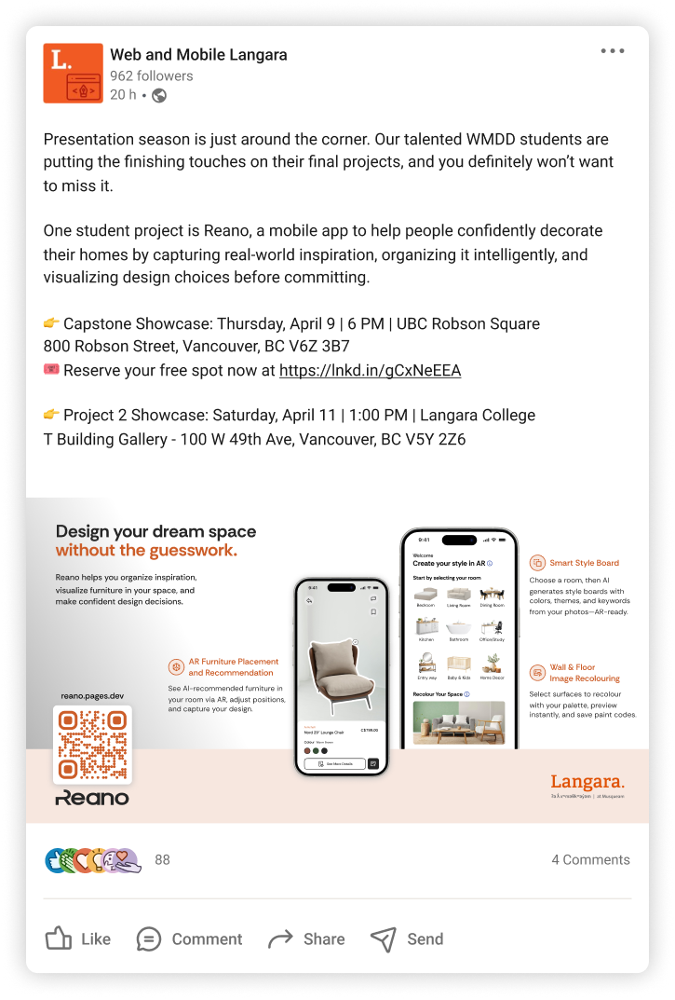

Reano
Mobile App — UX Design
The Introduction
Reano is a mobile home decorating app that empowers anyone to turn scattered design inspiration into real room transformations. Using AI-powered Style Boards, AR room visualisation, and wall and floor recolouring, it bridges the gap between inspiration and confident purchasing.

Role
Lead Designer
UX Research, Style Board Feature, Component Library, Usability Testing
Tools
Figma, Illustrator, InDesign, Maze, After Effects, Premiere Pro
Context
Academic Project — Mobile App
Year
2026
Reano was my concept, after noticing how much inspiration people collect from walks, travel, and social media, without anywhere meaningful to put it. I initially explored this through the lens of creatives before focusing on interior design, where the business case and audience were clearest. Like Arvo, it was a deliberate choice to work outside the medtech and edtech projects that tend to dominate the program, in favour of something I was genuinely curious about with a strong market angle.
The Challenge
Digitally native millennials and Gen Z consumers collect home decor inspiration but have no reliable way to organise it, visualise it in their actual space, or act on it confidently. The result is purchasing uncertainty, financial loss, and a persistent gap between inspiration and action.

The Research
Surveys, user interviews, and competitive analysis grounded the project in real user behaviour. Our primary audience of millennials aged 30–45 and older Gen Z aged 18–29 collectively spend over USD 1,200 annually on furniture, are highly active on visual platforms, and show growing openness to AR and AI tools.[1]
Competitive analysis revealed a consistent gap: existing tools focused on AR visualisation or product browsing, but none offered an AI-powered inspiration organiser that could extract a design direction from a user's own saved images. The Style Board was Reano's clearest point of differentiation and my primary area of ownership.
Insights were synthesised into personas, user stories and flows that guided every major design decision throughout the project.

Style Board User Flow
The Process
We stayed in wireframes longer than usual, deliberately. Resolving layout and features before touching colour or polish meant that by the time we moved into mockups the structure was solid and the team was aligned. I applied lessons from Arvo to Reano from the start: proper spacing, consistent margins, and a component library built with developer handoff in mind. After finalising mockups, we built a complete end-to-end app flow in Figma so developers could see exactly how every screen connected.
Like Arvo, each designer owned a feature. The biggest structural problem we identified was around AR: our navigation gave users direct access to the AR room visualiser from the home page and navbar, but AR recommendations were powered by style data that hadn't been collected yet. A user jumping straight to AR would have no personalised results to work with.

Early Wireframe Annotations
The solution was to restructure the entry point entirely. We removed the direct AR shortcut and redesigned the home page around room selection instead. Choosing a room first naturally leads the user into the Style Board to define their aesthetic, which then powers the furniture recommendations that feed into AR. The flow became intentional rather than open-ended, and users arrived at AR with the context needed to make it actually useful.
The Style Board went through significant reduction alongside this. Time and development constraints forced hard decisions, each one sharpening the answer to a single question: what does a casual user actually need in their first session?
Usability testing through Maze revealed users understood the app visually but didn't know what was tappable or how features connected. We added text labels to icons, redesigned onboarding, and introduced tooltips.

Components
The Decisions
Room first, not AR first. Early navigation gave users direct access to AR from the home page and navbar, but AR relied on style data that hadn't been collected yet. We removed the shortcut and restructured the home page around room selection, which naturally guides users through the Style Board before reaching AR. The flow became purposeful rather than open-ended, and users arrived at AR with the context to make it useful.
Labels over icons alone. AR and recolouring assumed a visual literacy our users didn't have. Adding text labels was a small change with an outsized impact on user confidence and clarity.
Proper onboarding. Adding onboarding screens, then creating a step by step flow guided by tooltips gave users an immediate, familiar anchor before any technical features appeared which lowered the barrier to engagement without reducing what the app could do.
End-to-end app flow for handoff. After finalising mockups, we mapped every screen connection into a single flow document for developers. It replaced lengthy back and forth with a clear shared reference that the whole team could work from.

The Reflection
Reano pushed me to design for users who weren't like me or my team. Most of us were comfortable with technology; our early assumptions showed it. Getting in front of real users who had never used AR before recalibrated everything.
Leading the Style Board from concept through constraints taught me how to make decisions under pressure and own the outcome, even with incomplete information. The tooltip gap was a genuine lesson: you can't test what isn't there yet, which means sequencing what you build and what you test matters deeply.

Arvo made me a better designer for Reano. The habits I built there, staying in wireframes longer, building the design system properly from the start, thinking about developer handoff early, showed up in how I approached this project from day one. Seeing those lessons compound across two projects confirmed something I already suspected: process is what makes the work hold together.
Arvo made me a better designer for Reano. The habits I built there, staying in wireframes longer, building the design system properly from the start, thinking about developer handoff early, showed up in how I approached this project from day one. Seeing those lessons compound across two projects confirmed something I already suspected: process is what makes the work hold together.
